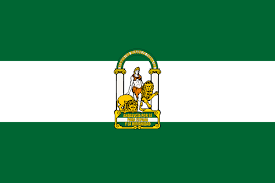
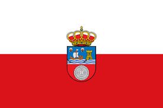
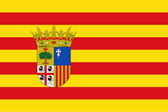

¿Qué es proyde?
Es una ONG española vinculada a los Hermanos de las Escuelas Cristianas (La Salle) Su misión principal es la cooperación al desarrollo, centrada especialmente en la educación. Creen que el acceso a una enseñanza de calidad es la herramienta más eficaz para que los pueblos empobrecidos alcancen su autonomía
Por qué lo realizamo y el fin
Justicia, no caridad: Se busca pasar de la simple "ayuda" a la transformación de las estructuras que causan la pobreza. Se cree que un mundo más justo es posible mediante la educación. Educación en Valores: El objetivo es que el alumno no solo aprenda matemáticas o lengua, sino que se convierta en un ciudadano global crítico, solidario y responsable con su consumo. Identidad Lasaliana: Siguiendo el legado de San Juan Bautista de La Salle, la institución tiene un compromiso histórico con los más necesitados y con la construcción de la fraternidad universal.
Comunidades autónomas en las que se realiza





